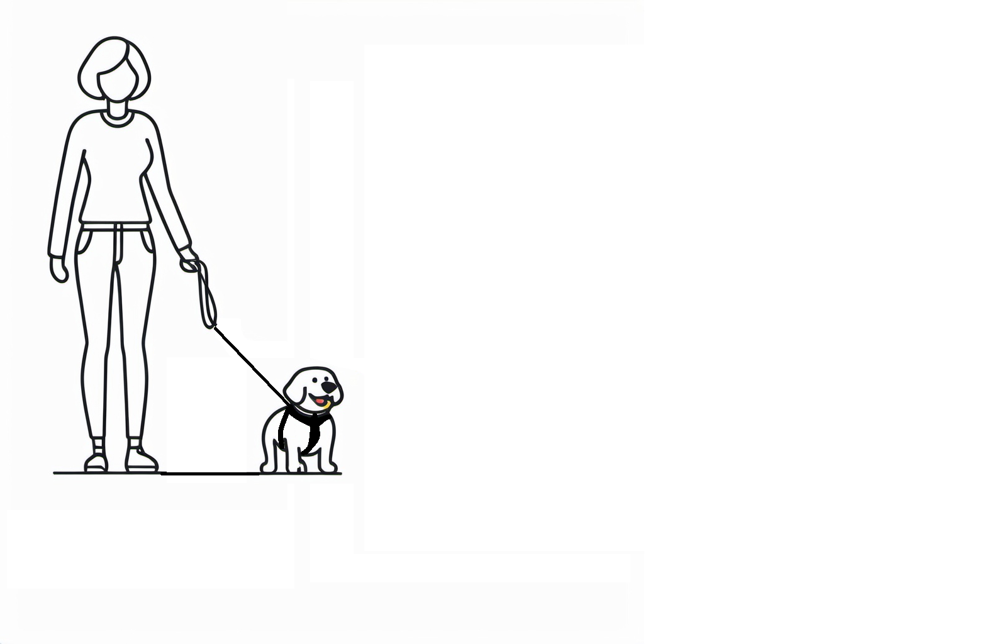
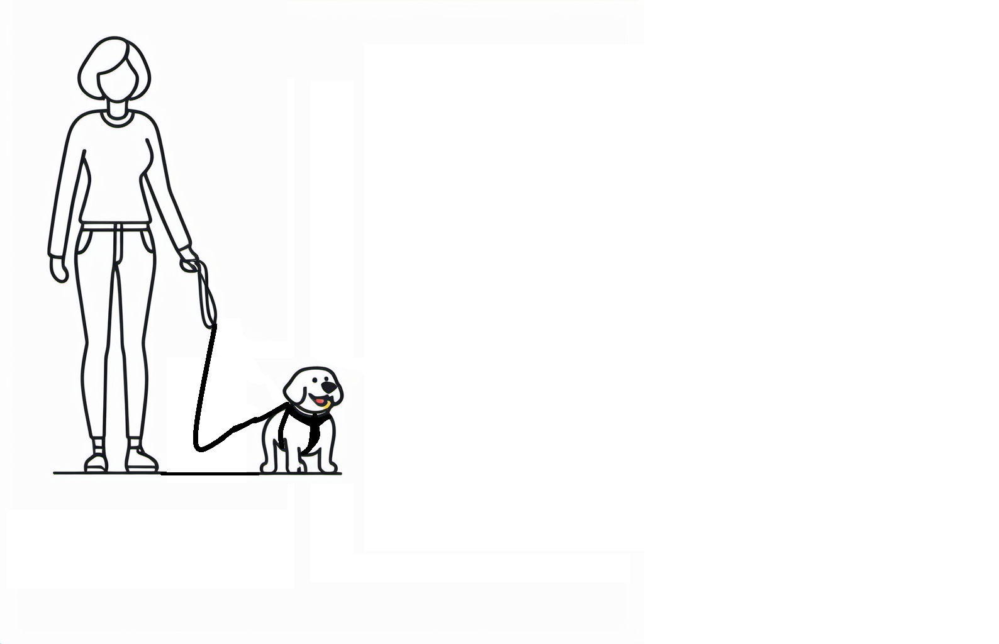

😊 The Smiley Curve: A Simple Leash Technique for a Happier Dog! 🐶
Why Use the Smiley Curve?
- 🐕 Traditional tight leashes create tension, leading to stress and pulling.
- 😊 A slight curve in the leash (like a smile) promotes loose-leash walking.
- 🐾 Encourages natural movement, better communication, and relaxation.


How to Do It?
- 1️⃣ Start with the right gear – Use a comfortable harness and a 6ft leash.
- 2️⃣ Keep a slight curve – No tension, just enough slack for free movement.
- 3️⃣ Adjust your pace – Walk naturally, rewarding loose leash behavior.
- 4️⃣ Stay engaged – Watch your dog’s signals and adjust as needed.
Benefits for Dogs & Owners
- 🐶 For Dogs:
- ✔ Reduces pulling & frustration
- ✔ Encourages sniffing & exploration
- ✔ Builds confidence & relaxation
- 👩🦰 For Owners:
- ✔ Less arm strain & frustration
- ✔ Strengthens dog-human bond
- ✔ Turns walks into enjoyable experiences
Things to Watch for When Practicing
- 🚫 Avoid sudden leash tightening – This confuses the dog.
- 🐾 Stay consistent – Dogs learn through repetition.
- 🎮 Don’t rush – Some dogs need time to adjust.
- 👀 Watch for distractions – Gradually introduce busier areas.